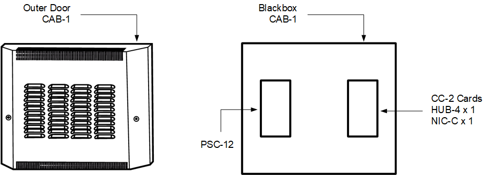
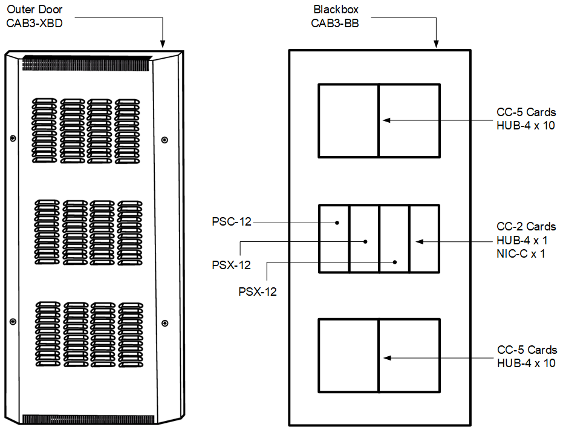

Installing Fire WAN Enclosure
Scenario
The WAN Enclosure is the Fire WAN communication interface hardware that is installed in a CAB-1X, CAB-2, or CAB3 cabinet.
It consists of the CC-5, PSC-12, PSX-12, NIC-C and HUB-4 modules.
Follow the procedure here below for installation. Each step is thoroughly explained in the referenced installation instructions.
For conceptual and reference information, see also Fire WAN Enclosure Hardware Installation.
For the software configuration in Desigo CC, see Configuring a Fire WAN.
Hardware Installation
- Install the desired enclosure: CAB1-X, CAB2, or CAB3.
Refer to the CAB Enclosure Components table to select the appropriate installation instructions.
Refer also to the figures below for information on CAB rows and module placement. - Install the tamper switch when required for UL 2610 applications.
When a tamper switch is used in WAN Enclosure applications, it must be connected to the PSC-12. The PSC-12 will report the tamper switch activation to Desigo CC. - Pull the field wiring into the backbox and dress it to approximately where it will go.
- Install the PSC-12 in the CAB enclosure.
Refer to the PSC-12 Installation Instructions, P/N 315-033060. - Install the PTB in the bottom of the CAB enclosure.
Refer to the PTB Installation Instructions, P/N 315-034877. - Install any PSX-12 modules in the CAB enclosure.
Refer to the PSX-12 Installation Instructions, P/N 315-034120. - Install field wiring.
- Dress the field wiring that will be going to the CC-5.
Connect Field Wiring to CC-5 screw terminals, as appropriate. - Install card guides in CC-5.
- Install the NIC-C in a CC-5 or CC-2.
Refer to the NIC-C Installation Instructions, P/N 315-099320. - Install each HUB-4 in a CC-5 or CC-2.
Refer to the HUB-4 Installation Instructions, P/N 315-099458. - On the PSC-12, set the circuit breaker for the battery to the OFF position.
- Verify that the AC dedicated circuit breaker is turned off at the mains.
- Connect the AC mains and battery wiring to the PTB.
- Connect the PTB output to the PSC-12.
- Turn on the dedicated circuit breaker.
- Turn on the PSC-12 circuit breaker for the battery.
- Any problem found will be reported on Desigo CC. Identify all discrepancies and correct them until all faults are corrected.
Minimum and Maximum Sized WAN Enclosures

